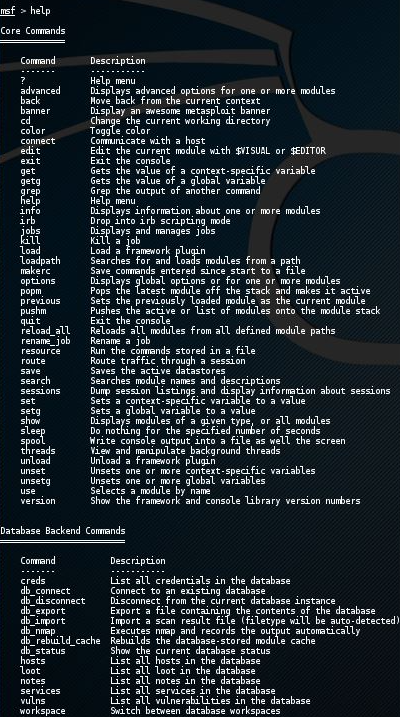
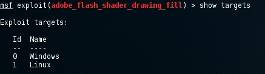
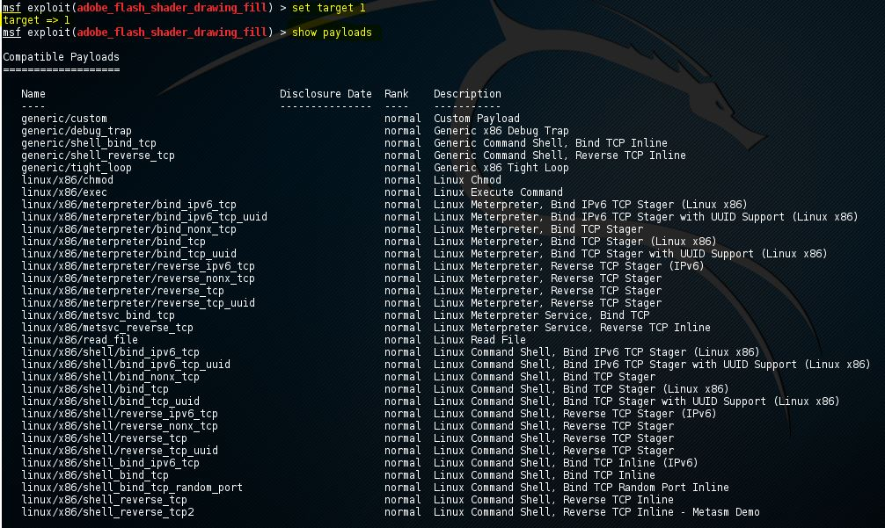
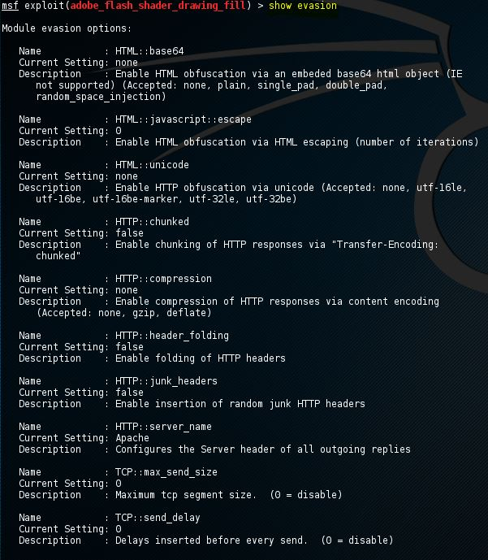

Metasploit
The Metasploit framework is a very powerful tool which can be used by cybercriminals as well as ethical hackers to probe systematic vulnerabilities on networks and servers.
With Metasploit, the pen testing team can use ready-made or custom code and introduce it into a network to probe for weak spots. As another flavor of threat hunting, once flaws are identified and documented, the information can be used to address systemic weaknesses and prioritize solutions.
-
Commands
 When Metasploit has booted and the msfconsole is available we can type 'help' to get an overview of the Metasploit core and backend commands with a description:
-
'use' and back 'commands'
 The
The usecommand in Metasploit is used to activate a particular module and changes the context of the msfconsole to that particular module. The exploit name will be mentioned in red on the command line as following:If we want to leave the exploit context and switch back to the msfconsole we need to use the
backcommand. The back command will take us back to the msfconsole in the general context. -
'info' command
When an exploit is selected with the use command we can retrieve information like the name, platform, author, available targets and a lot more by using the info command.
-
'show targets' command
 The
show targetscommand will return a list of operating systems which are vulnerable to the selected exploit. When we run the command we get the following output for the adobe_flash_shader_drawing_fill exploit:This exploit targets both Windows and Linux operating systems. Note that we can use the info command to get additional info about this exploit and targets. To set a target we can use the command set followed by the target ID:
-
'set target []' command
 By setting the target the list of payloads will be reduced a lot because only payloads will be shown which are compatible with the target:
-
'show evasion' command
 The
show evasioncommand returns a list of available evasion techniques.